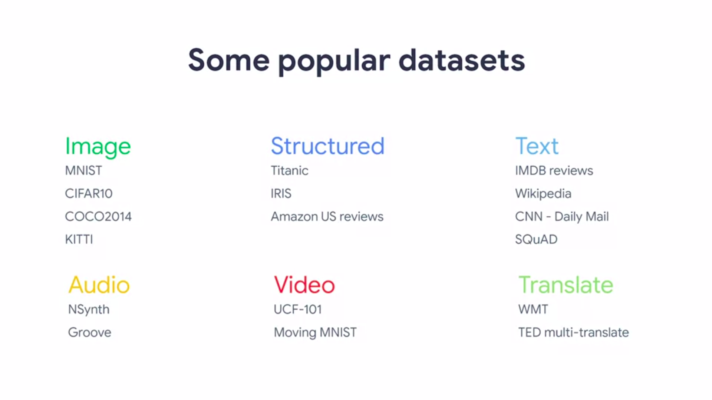
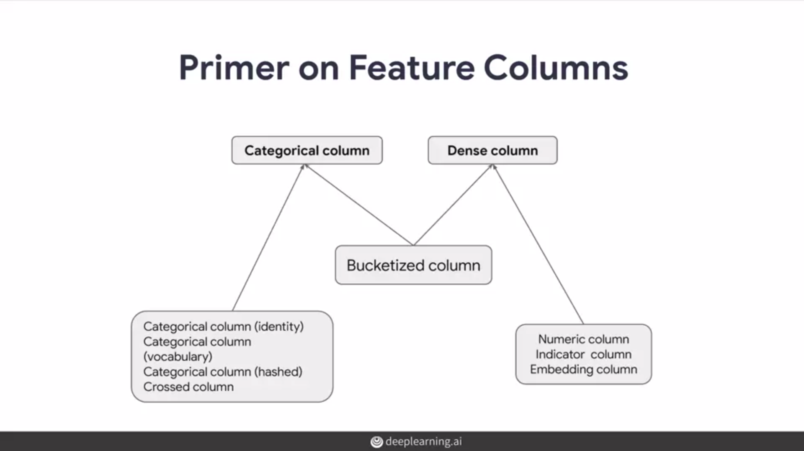
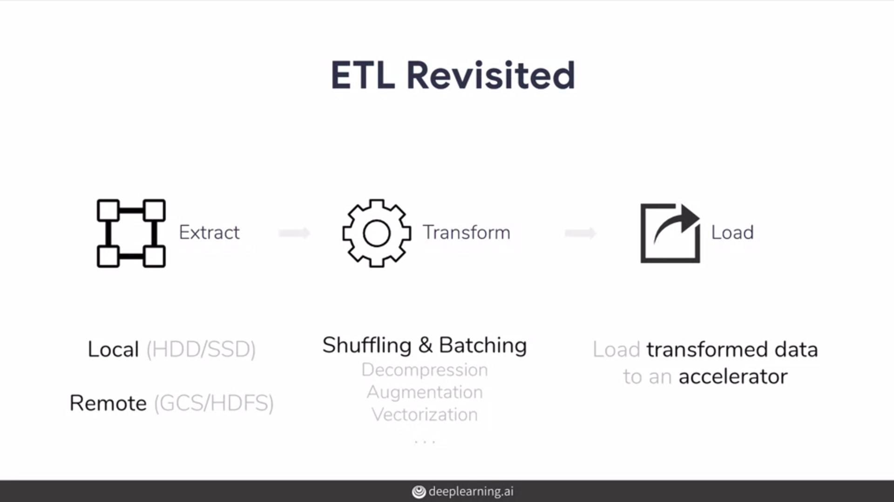
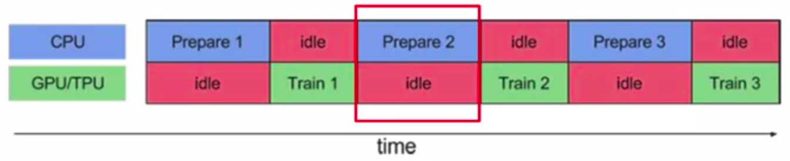
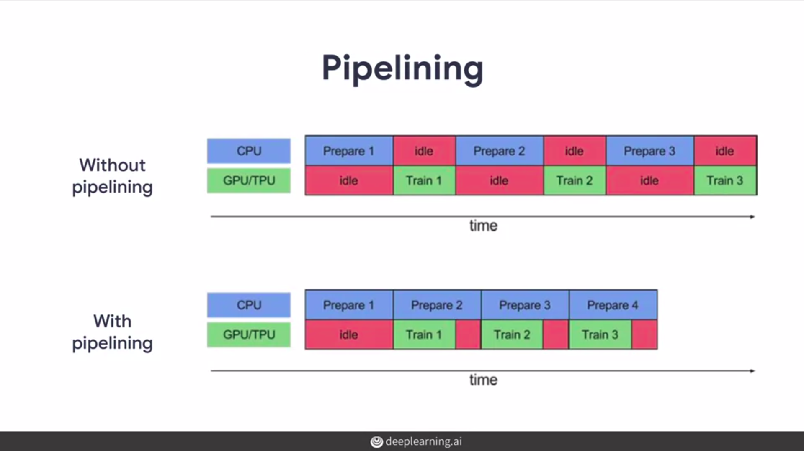
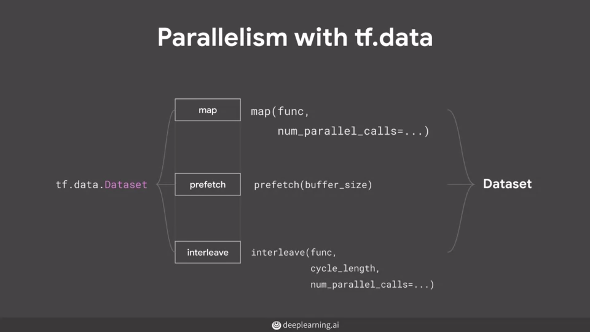
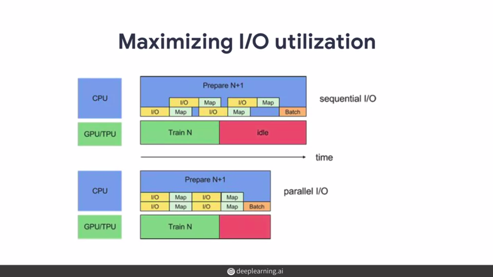

Data Pipelines With Tensorflow Data Services
Data powers all of our machine learning models. TensorFlow Data Services makes managing data much easier. As developers, one of the things that we've discovered when we are building models is that we often have to write far more lines of code to get our data and to slice our data and to manage our data to be able to feed it for training, then we write code for the actual training itself.
Here, we'll learn about how to quickly load and use existing datasets, how to input datasets from outside into the TFRecord format, and how to build efficient data pipelines and optimizations. Finally, we'll learn how to polish and maybe share our own datasets with others using this framework.
Overview
Introduction to Tensorflow Datasets (tfds)
Over time, we've noticed that the type of data used to create models and thus also used for inference tends to fall into these high-level categories.
Data is not what it seems
- Source data can be a little bit out of step as various collections of public research data are found in vastly different formats that cannot simply be loaded without a lot of custom coding.
- Every dataset has its own set of instructions that needs to be followed in order to set it up.
- If you have a particular dataset in mind, we may not be entirely sure how much data it holds until we actually download it.
- We also have the need to transform data into a format that's readily usable by a model.
- Every single source of data can be different and have different considerations, even data sets of the same basic type.
Tensorflow Datasets (TFDS)
With TensorFlow datasets, we can do away with all of these problems.
- Ready-to-use - TFDS was built with the intention of easily integrating your dataset seamlessly with TensorFlow's training pipeline.
- Flexible - It's very flexible to switch between different datasets with minimal code changes and to handle diverse data structures and use cases.
- Plethora of Public Research data - TFDS comes with a rich collection of data sources related to a multitude of machine learning tasks. 30
- Seamless Integration - In order to make tasks work seamlessly together with TensorFlow, the pipelines are designed in a way so that no additional dependencies are needed.
- Faster prototyping - Since all of these features indirectly improve productivity and building these pipelines, you can focus on experimenting and optimizing them.
Here are some of the well-known datasets available in TFDS which we can integrate with our machine learning workflows.

Extract, Transform and Load
Data pipelines at TFDS work on the principle of ETL, which stands for extract, transform, load. Separating these tasks allows us to make systems that are less brittle to changes in the underlying data.
Extract - tfds and tf.data cannot just extract data from simpler sources, like in memory arrays. But also large data sets which are composed of multiple shards distributed in cloud storage systems.
Transform - It can then transform the data, a process of extracting features performing augmentation on
our data. And also converting data to tensors when necessary to get it ready for training.
Load - By the time we have our transformed data with us, we can then go ahead and load it into the
appropriate device. Such as a GPU or TPU with a set of tools in Tensorflow. How we load the data can have
a significant impact on the performance of your training pipelines.
import matplotlib.pyplot as plt
import tensorflow as tf
import tensorflow_datasets as tfds
# EXTRACT
dataset = tfds.load(name="mnist", split="train")
# TRANSFORM
dataset.shuffle(100)
# LOAD
for data in dataset.take(1):
image = data["image"].numpy().squeeze()
label = data["label"].numpy()
print("Label: {}".format(label))
plt.imshow(image, cmap=plt.cm.binary)
plt.show()
Versioning
# Loading specific version
mnist = tfds.load("mnist:1.*.*")
Every dataset is versioned so that if the dataset grows and evolves, a specific version we may have used and will be maintained so that our results can be reproducible. Changes to the dataset will spawn new versions. TFDS versioning comprises three numbers delimited by a period. Major version, Minor version and Patch level.
Major version change - If we increment the major version, the slicing API may not necessarily return the same set of records for a given slice. This can even be the case if the existing data has changed.
Minor version change - An increase in the minor version signifies that there’s no change in the existing data, but implies that some additional features have been added.
Patch version change - If the patch version has increased, the serialization on disk may have changed.
Dataset = tfds.load('mnist', as_supervised=True)
# Inspecting shapes of a batch
for image, label in dataset["train"].take(1):
print(image.shape, label.shape)
# (1, 28, 28, 1) (1,)
A handy feature of loading a dataset is to specify it as_supervised. If you do this as_supervised equals true, then our dataset will be preformatted into tuples of data and label. If you set it as false, our dataset will be available as a dictionary.
Exporting data into the training pipeline
When it comes to using data, what type of data do we think we can feed into a neural network? The answer of course is numbers such as floats. Real life input data may contain non-numerical data such as strings, numbers that represent categories. We can create input pipelines to process there inputs into the form that can be the tf.data API enables us to build complex input pipelines from simple reusable pieces.
For example,
Image model pipeline
- Aggregate data from files in a distributed file system
- Apply random perturbations to each image
- Merge randomly selected images into batch for training
Text model pipeline
- Extracting symbols from raw text data
- Converting them to embedding identifiers with a lookup table
- Batching together sequences of different lengths
Feature Columns

Numeric Column
# Default to a tf.float32 scalar
neumeric_feature_column = feature_column.numeric_column(key ="length")
# Represent a tf.float64 scalar
neumeric_feature_column = feature_column.numeric_column(key ="length", dtype=tf.float64)
Bucketized Column
# first convert the raw input to a numeric column
Numeric_feature_column = tf.feature_column.numeric_column("year")
# then, bucketize the numeric column on the year 1960,, 1980 and 2000
bucketized_feature_column = tf.feature_column.bucketized_column(source_column=Numeric_feature_column, boundaries =
[1960, 1980, 2000])
Categorical identity column
Identity_feature_column = tf.feature_column.categorical_column_with_identity(key="my_feature_B", num_buckets=4)
Vocabulary Column
A great way to handle strings if we have a fixed range of keywords is to use a Categorical Vocabulary Column.
# From vocabulary list
Vocabulary_feature_column1 = tf.feature_column.categorical_column_with_vocabulary_list(key="feature_1",
vocabulary_list=["kitchenware", "electronics", "sports"])
# From vocabulary file
Vocabulary_feature_column2 = tf.feature_column.categorical_column_with_vocabulary_list(key="feature_1",
vocabulary_file="product_class.txt", vocabulary_size=3)
Hashed Column
Categorical Vocabulary Column works nicely if there is a small number of categories and the example we saw earlier had only three or four. A common technique used when there are many categories is to hash them to a smaller set. Make sure hash size is considered carefully to avoid too many conflicts.
hashed_features_column = tf.feature_column.categorical_column_with_hash_bucket_size = 100)
Feature Crossing
Feature crosses are synthetic features formed by multiplying or crossing two or more features. Crossing features can provide predictive abilities beyond what those features could provide individually.
# Bucketize the latitude and longitude using the "edges"
Latitude_bucket_fc = tf.feature_column.bucketized_column(tf.feature_column.numeric_column('latitude'),
list(atlanta.latitude.edges))
longitude_bucket_fc = tf.feature_column.bucketized_column(tf.feature_column.numeric_column(longitude),
list(atlanta.latitude.edges))
# Cross the bucketized columns using 5000 hash bins
crossed_lat_lon_fc = tf.feature_column.crossed_column((latitude_bucket_fc, longitude_bucket_fc), 5000)
Embedding column
embedded_dimentions = number_of_categories ** 0.25
categorical_column = ... # create any categorical column
# Represent the categorical column as an embedding column. This means creating # an embedding vector lookup table
with one element for each category.
embedding_column = tf.feature_column.embedding_column(categorical_column = categorical_column, dimension =
embedding_dimensions)
Loading data and extracting
Now that we've seen feature columns, let's switch gears a little and see how data gets loaded and extracted to the ETL pipeline. There's lots of ways data can get into the pipeline, and we'll explore some of the most commonly used including NumPy, DataFrames, images, CSV and text, TF records and generators.
Sample script available here.
Performance
How we load our data into our model can have a huge impact on how efficiently the model trains. we'll learn how to handle our data input to avoid bottlenecks, race conditions and more. The design of our data and input pipeline can be as important as the design of our model layers when it comes to efficient training.
Boosting tf data pipeline
- Rise of accelerators and parallelism
- High-performant tf.data input pipelines
- Adopt pipelines to different scenarios
- Learn better ways of using tf.data operations.
ETL Revisited

What happens when we train a model?
Let's now think about what's going on, particularly from a processor perspective, when we're training a model. Typically, the preprocessing parts,the extraction and transformation, is done with a CPU. This type of code simply doesn't run on a GPU or TPU, loading data, storing it, shuffling and converting it, etc. But the training will take place on a GPU or TPU if it's available, and that's where significant performance investment has been made. But when we think about it that first step, being on the CPU, can become a bottleneck. Below figure you can see that either the CPU is idle or the accelerators are, and that's not a very efficient use of our resources.

Data and its problems
- Bound to come across fitting input data locally
- When distributed training expects distributed data
- Avoid having the same data on every machine
So let's consider what pipelining will do here when we try to design a system to reduce the wasted time. If we realize the time taken for preparation can be parallelized with the training, then we'll end up with a scenario like the bottom of the diagram below. We can spend some time preparing batch one, and then while we're training batch one, we can prepare batch two, and while we're training that, we prepare batch three and so on. So now you've seen the opportunity for tuning and performance improvement in our pipeline by reducing idle time between the CPU and GPU and looking to avoid bottlenecks, particularly in the CPU parts of the ETL process.

Methodologies to improve performance
- Improve training time with caching
dataset = tfds.load("cats_vs_dogs", split=tfds.Split.TRAIN)
# In-memory
train_datset = dataset.cache()
# Disk
train_dataset = dataset.cache(file_name = "cache")
model.fit(train_dataset, epochs=50)
- Parallelism APIs

- Autotuning
- tf.data.experimental.AUTOTUNE
- Tunes the values dynamically at runtime
- Decides on the level of parallelism
- Tweaks values of parameters in transformations (tf.data)
- Buffer size (map, prefetch, shuffle, …)
- CPU budget (num_parallel_calls)
- I/O (num_parallel_reads)
dataset = tfds.load(“cats_vs_dogs”, split=tfds.Split.TRAIN)
train_dataset = dataset.map(format_image).prefetch(tf.data.experimental.AUTOTUNE)
- Parallelizing data extraction
TERECORD_DIR = ""
files = tf.data.Dataset.list_files(TERECORD_DIR + "cats_vs_dogs-train.tfrecord-*")
num_parallel_reads = 4
dataset= files.interleave(tf.data.TFRECORDDataset, # map function
cycle_length=num_parallel_reads, # ...
num_parallel_calls=tf.data.experimental.AUTOTUNE)
